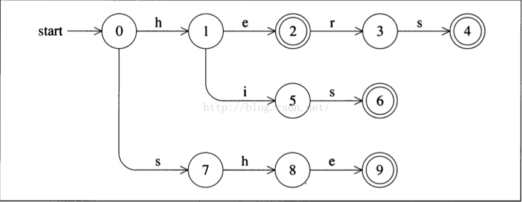

大家好，欢迎大家来到Coding迪斯尼，在深入探究词法解析算法前，我们需要了解一些基本概念。了解基本概念有点像背单词，它有些无聊，但你又不得不做。好在这类事情在我们的课程里不多。大家过过眼，留个心眼就好。
阅读博客的朋友可以到我的网易云课堂中，通过视频的方式查看代码的调试和执行过程：
http://study.163.com/course/courseMain.htm?courseId=1002830012
在词法解析中有一个概念叫字母表,字母表并不是单单指字母组成的集合，它是指一组数量有限的符号的集合。例如C语言中常用的ASCII字符集就可以称作字母表。所有汉字的集合也可以称作字母表。{‘0’，‘1’}是二进制的字母表。
字符串或者叫单词，是字母表中一系列符号的组合，例如英语单词，中文的词组都可以称之为字符串。在实际运用中，字符串就是字母数组。有一种特殊的字符串叫空字符串，也就是不包含任何字母的字符串。在C语言中可以用只包含’\0’的数组作为空字符串，char buf[10] = {‘\0’}。
有一个概念叫“语言”，他是指所有字符串的集合，比“语言”小的概念叫“句子“，他是一系列字符串组成的集合。也就是说，有限个字符串组成的集合叫句子，所有可能句子组成的集合叫语言。拿我们中文来举例，我们的句子其实是一系列中文词组的集合，那么中文就是所有句子的集合。
词组必须依照某些规则组合才能形成有意义的句子，这种规则我们就称之为语法。
大家注意到，语法跟词组其实是无关的,跟词组的组合规则有关，这就是为什么在编译器中，词法解析和语法解析可以分开来，词法解析的主要任务就是识别有效词组。
前缀：一个字符串的前缀是指，将字符串尾部的0个或若干个字符删除后剩下的部分。例如“in”是单词”inconsequential” 的前缀，大家要注意,根据定义，”inconsequential”本身也是它自己的前缀。如果把整个字符串都删了，得到的空字符串，也是合法的前缀。
后缀：它是指将字符串从前头删掉0个或若干个字符后剩下的部分。”ible”是”incomprehensible” 的后缀。当然如果从前头将整个字符串删除后得到的空字符串也是合法后缀。
子字符串：它是指将字符串的前缀后后最都删除后，剩下的那部分。例如”age”是”unmanageable” 的子字符串。如果删除的前缀和后缀合在一起是整个字符串，那么删除后的空字符串也是合法的子字符串。
真子集：前缀中有两个特殊成员，一个是空字符串，一个是原来字符串本身。例如” inconsequential”的前缀中，空字符串和“inconsequential“也是它的前缀，如果把这两个特殊的字符串从前缀中去掉，所剩下的集合叫做前缀的真子集。后缀和子字符串做同样的操作后也可得到各自的真子集。
子序列：它是指在字符串中，任意删除0个或多个字符后剩下的字符串，剩下的字符，他们的位置不一定是连续的，例如：iiii, ssss 都是字符串”Mississippi”的子序列
在字符串的基础上，我们可以定义一系列操作。两个字符串的连接操作(concatenation)，是将一个字符串添加到另一个字符串的后面，例如”fire” . “water” = “firewater”. 空字符串可以和任何字符串相连接，连接后得到的字符串不变, 连接操作可以用符号”.”表示，大家如果用过php的话，php字符串的连接操作用的就是点号。
如果把连接操作看做是一种乘法，那么X^n, 也就是X的n次幂就是将X字符串本身连接n次。假设有一个字母表如下：
L(octal) = {0 ,1 , 2, 3, 4, 5, 6, 7}. 那么L^3, 表示的就是有三位数的八进制数。
如果L(Binary) = {0, 1}. 那么 L^n 就表示所有二进制数。
（大家要有不理解的地方可以在讨论区提出）
两个集合的连接实际上就是在第一个集合任意选取一个元素，在第二个集合任意选取一个元素，将这两个元素连接起来，所有这种操作的结果就是两个集合连接的结果，例如L(Binary) ^2 = L(Binary) . L(binary). 计算的方式是在第一个{0,1}中任意选一个元素例如0, 第二个集合{0,1}中任意选一个元素例如1，得出结果01, 这种选取结合的方式有4种，得到4种结果: 00, 01,10, 11.
这种运算，说的专业点也叫“笛卡尔乘积”
Kleene 闭包：像上面提到的，L^n , n>=0 时所形成的集合叫Kleene闭包。我们用L*来标记。
假定集合L1只包含一个字符串，”Va”, 集合L2只包含字符串”Voom”, 那么
L1* . L2 就是
Voom, VaVoom, VaVaVoom, VaVaVaVoom …… （Va在Voom 前面出现零次或多次)
上面提到的公式L^n , n>=0, 如果把n>=0 改成n>=1, 那么我们把这种情况叫做正闭包，用 L+ 表示。
我们可以把上面的连接操作和闭包操作用到下面两组集合上：
L(digit) = {0, 1, 2, 3, 4, 5, 6,7 ,8 ,9}.
L(alpha)= {a, b, c, …. z}.
L(digit)+ 就是C语言中的所有数字常量。
L(aphpa) . ( L(alpha) . L(digit))* 就是C语言中，所有合法的变量名。例如a, ab12, times13 这些都是C语言变量名;
正则表达式
正则表达式实际上就是上面提到的连接和闭包操作的各种组合运用。正则表达式描述了字母组合的某种规则，然后看给定的字符串中的字母，他们的组合方式是否跟正则表达式所描述的规则相符合。
最简单的正则表达式是一系列单个字符，匹配输入中的对应字符, 正则表达式中还有一些特殊字符，用来表达一些特殊的含义，正则表达式完全可以写成一本书，在这里我们只关注用得到的一些内容，我们只要关注以下几种规则：
1. 单字符匹配。字母表中每一个字符都是一个正则表达式。例如字符c, 匹配单个字符”c”.
2. ee 两个正则表达式前后连接，用于判断输入的字符串中，是否存在前一部分匹配第一个正则表达式，后一部分匹配第二个正则表达式。例如字符a, n ,d分别匹配字母”a”, “n” , “d”, 那么正则表达式and 则匹配输入字符串中的”and”
3. 通用匹配符 . (括号前面有一个点) ，. 可以匹配任何单个字符，例如a . y 可以匹配any, amy, agy。
4. ^开头匹配符， 例如^and 匹配任何以and开头的字符串
5. $末尾匹配符，例如and$， 用于匹配任何以and结尾的字符串。
6. 字符类，任何包含在 [ 和 ] 之间的字符构成字符类，例如[0123456789]匹配任何单个数字，一般简写成[0-9]. [0-9A-Fa-f]匹配任何一个十六进制数。[a-zA-Z]匹配任何字母，符号 ^ 如果出现在括号里，那表示取反，例如[^a-z]匹配任何不是小写字母的字符。
7. 三种符号*+？,如果正则表达式后面跟着*号，例如a*, 它匹配字母a的零次或多次从复。a+ 匹配字母a的一次或多次重复。a? 匹配字母a的零次或一次重复。ll?ama匹配llama, lama. l+ama 匹配lama, llama, lllllllllllama(很多个l和ama). l*ama 匹配ama(l出现零次), lama,llama, lllllllama….等等. 0[xX][0-9a-fA-F]+ 匹配所有十六进制数。
8. e | e, 两个正则表达式被一个竖杆分开，如果一个字符串匹配其中任何一个表达式，那么该字符串就匹配这个表达式。例如either | or 匹配字符串either 和or. (frank | john)ie 匹配字符串frankie 和 johnie。而(frank |john)(ie)? 匹配frankie, john, frankie, johnie。
正则表达式作用有限，它可以匹配字母组成的字符串，但无法识别例如：
((()()(())) 这种括号是否正确匹配的问题，这种问题其实是语法解析器的工作。
接下来我们要谈谈一个相对重要也相当有用的概念，叫有限状态自动机(FMS)。
FMS 是 Finite statemachine 的缩写，FMS包含以下一些特点
1. 一组有限的状态集合
2. 一组从一个状态到另一个状态的转换，每一个转换对应一个输入字符。
3. 一个特殊状态叫初始状态。
4. 一组特殊状态叫接收状态。
我们看个例子：

图中每一个圆圈表示一个状态，里面的数字表示状态的编号。状态0是初始状态，状态机开始就处于状态0. 状态间的连线就是状态的转换。从初始状态开始，如果读入字符h, 那么状态机就从状态0转到状态1. 如果接下来读到字符e那就从状态1转到状态2. 如果读到的字符是i那么就从状态1转到状态5. 如果读取字符c 使得状态机从状态N转到状态M, 我们用next(N, c) = M 来表示。Next就叫做转换函数。有两个圈的状态叫接收状态。一旦进入接收状态，就表明当前进入状态机的字符组成的字符串可以被状态机接受。一般来说，一旦进入接受状态后会采取一些行动，根据我们以前的编译器中的词法解析器为例，进入接受状态要做的操作就是打标签。如果输入的字母没有对应的转换，那么状态机会默认的进入错误状态，例如从状态0开始，如果输入的字母是x, 但图中没有对应x的转换，因此状态机进入错误状态。
在程序中，我们一般用二维数组来实现有限状态机。另外用一个数组来表述状态机中的状态，我们看看一组伪码：
Transition_table 是有限状态自动机
Accepting 数组是状态数组
下一个状态可以从输入字符input_character, 和当前状态current_state读出
next_state =Transition_table[current_state][input_character].
If (Accepting[next_state] == true) {
do_an_accepting_action(next_state);
}
其中Transition_table用来表示有限状态机中的转换关系，Accepting数组用来表示各个状态，如果给定状态是接收状态，那么它在数组中的值为true.
下一节我们将用程序来实现一个有限状态自动机，它的功能是用来判断输入的字符串是整形，还是浮点型，例如识别12306是整形，3.1416926是浮点数